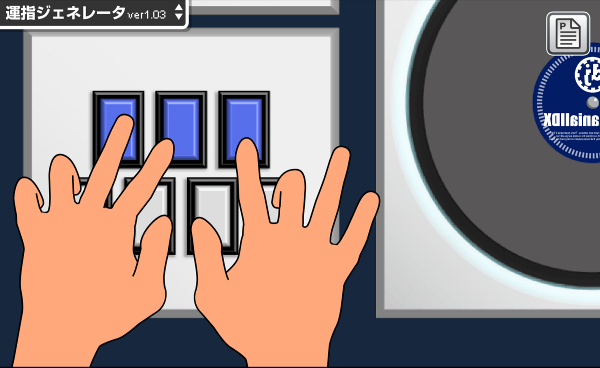
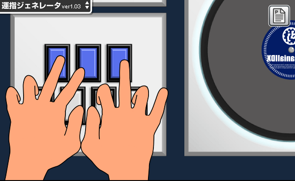

📑 文章目录（11 节）
本文详细讲解了 IIDX（弐寺 / beatmania IIDX）诸多指法（运指）中的 DOLCE 式（ドルチェ式）与 quasar 式（クエーサー式），包括它们的手指放法、擅长与不擅长的键型配置，以及与 1048 式之间的区别。
笔者的主力指法是 1048式，并没有将 DOLCE 式或 quasar 式作为主力长期使用过，因此本文将围绕手型放法的基本思路以及与 1048式对比后的差异来展开说明。
- DOLCE 式和 quasar 式只有皿侧的手指放法不同，非皿侧与 1048式完全一致
- DOLCE 式直觉直观、易于上手，而且很容易变指（崩指）切换成 3:5 半固定，也适合推荐给新手
- quasar 式虽然好记，但在 12 交互和皿复合上存在明显短板。如果以它为主力，建议尽早兼修其他指法
- 如果未来打算用手腕搓盘（手首皿），首选 1048式；如果已经习惯了当前指法，也没必要强行更改
什么是 DOLCE 式与 quasar 式
两者都是以知名顶尖玩家名字命名的固定指法（固定运指）。IIDX 的各类固定指法中，非皿侧（远离转盘那只手）的手指分工几乎所有人都是相同的，真正决定指法名称的，是皿侧 3 个键（1P 时为 1、2、3 号键）分别用哪几根手指来按。
| 指法（运指） | 1 号键 | 2 号键 | 3 号键 | 4 号键 | 5 号键 | 6 号键 | 7 号键 |
|---|---|---|---|---|---|---|---|
| DOLCE 式 | 左中指 | 左食指 | 左拇指 | 右食指 | 右拇指 | 右中指 | 右无名指（小指） |
| quasar 式 | 左无名指 | 左中指 | 左食指 | 右食指 | 右拇指 | 右中指 | 右无名指（小指） |
| 1048式 | 左拇指 | 左中指 | 左食指 | 右食指 | 右拇指 | 右中指 | 右无名指（小指） |
| 对称固定 | 左无名指 | 左中指 | 左拇指 | 左食指 or 右食指 | 右拇指 | 右中指 | 右无名指（小指） |
| 上表为 1P 侧的情况，2P 侧左右镜像互换即可 | |||||||
可以看到 4～7 号键（非皿侧）全都一样，差别只在 1～3 号键。各流派指法的全貌已整理在指法总汇总文章中。
DOLCE 式（ドルチェ式）的手指放法


DOLCE 式是以著名玩家 DOLCE. 先生命名的指法。皿侧按中指、食指、拇指的顺序，以非常符合人体工学的自然放手姿势排布。
- 非常符合直觉，新手也很容易记住
- 只需张开手就能顺滑变指为 3:5 半固定
- 擅长应对 13 交互和 3 键轴谱面
- 12 交互稍有难度
- 难以过渡到手腕搓盘（手首皿）
DOLCE 式擅长的配置
由于 3 号键由拇指负责，因此在用中指和拇指应对的 13 交互以及以 3 号键为轴的谱面（3 轴）中表现非常强势。拇指与中指还可以借助左右翻转手腕的动作来发力，即便是偏慢的交互也能控制得很稳。
此外，当转盘（皿）出现时，只需把手朝转盘方向张开、同时让拇指留在 3 号键上，就能直接顺滑地变指（崩指）成 3:5 半固定形态，因此应对皿复合也相当得心应手。
DOLCE 式不擅长的配置
因为 1 号键用中指、2 号键用食指，所以 12 交互会比 1048式（拇指＋中指）稍微难打一些，不过只要习惯了并不会成为致命问题。
另一个短板是很难衔接手腕搓盘（手首皿）。手腕搓盘依赖于 1048式那种“拇指从食指下方穿过”的手型来把手腕搭在转盘上，因此保持 DOLCE 式手型是无法直接使出来的。
quasar 式（クエーサー式）的手指放法


quasar 式是以玩家 quasar 先生命名的指法。皿侧使用无名指、中指、食指按键，完全不用拇指。就像弹钢琴一样把手指依次排开，是最符合直觉的手型。
- 非常直观，新手最容易记住
- 擅长应对 13 交互
- 12 交互较难处理
- 一旦混入转盘（皿）就非常吃力
quasar 式擅长的配置
1 号键用无名指、3 号键用食指，因此在打 13 交互时可以配合手腕左右摆动来发力，非常好按。只要是没有转盘的纯键盘谱面，以它的上手门槛来说已经相当能打了。
quasar 式不擅长的配置
12 交互落在无名指和中指上，一旦密度升高就会非常吃力。因为无名指和中指不像拇指或食指那样容易独立活动。
另一个明显弱点则是皿复合。由于这套手型不用皿侧拇指，当转盘落下时，很难顺畅地切入用拇指补键的变指（3:5 半固定、拇指平按／ベチャ押し）。
quasar 式的优点在这里！
— あのquasar (@quasar_DPA) December 5, 2016
・是一套逼得你不得不去学其他指法的修行指法
quasar 式的缺点在这里！
・打不了皿复合
・根本打不了皿复合
・总之就是打不了皿复合
・完全彻底打不了皿复合
・那就开全皿（ALL-SCRATCH）练习吧！
・结果只有搓盘变强了 ← 现在在这里
DOLCE 式・quasar 式・1048式对比
| DOLCE 式 | quasar 式 | 1048式 | |
|---|---|---|---|
| 易记程度 | ○ | ◎ | △ |
| 12 交互 | △ | × | ◎ |
| 13 交互 | ◎ | ◎ | △ |
| 皿复合 | ○ | × | ◎ |
| 手腕搓盘（手首皿） | × | × | ◎ |
总结来说：论易记选 quasar 式，论均衡选 DOLCE 式，论综合强度与成长上限则选 1048式。如今的 IIDX 主流思路是固定一套主力指法，专心打磨读谱力与身体机能，因此如果你现在才刚开始学，最推荐的还是 1048式。
应该从 DOLCE 式或 quasar 式改指法吗？
是否需要更换目前的指法，可以参考下面这几种情况来判断：
- 已经习惯 DOLCE 式的人：如果没有打算学手腕搓盘（手首皿），完全不必强行改指法
- 以 quasar 式为主力的人：在转盘较多的谱面上容易陷入瓶颈，建议趁早兼修 DOLCE 式或 1048式
- 想使用手腕搓盘（手首皿）的人：需要改练 1048式
更换指法时，一开始先开自动搓盘（AUTO SCRATCH）等选项不去管转盘，强迫自己完全固定在新手型上适应，是最快的捷径。笔者自己也是入坑没多久就从对称固定改成了 1048式，大概花了 1～2 周就完全适应了。旧指法用得越久，肌肉记忆就越难改掉，如果打算换，越早动手越轻松。
DOLCE 式・quasar 式常见问题
DOLCE 式适合推荐给新手吗？
适合推荐。它手型自然好记，遇到转盘时也能很顺畅地变指成 3:5 半固定。不过如果你今后打算用手腕搓盘（手首皿），从一开始直接学 1048式会少走弯路。
一直用 quasar 式也能不断进步吗？
在纯键盘谱面上还能应付到一定程度，但 12 交互和皿复合是硬伤，打到高难度后很容易遇到瓶颈。如果目前以它为主力，建议尽早学习其他指法。
DOLCE 式和对称固定有什么区别？
两者都是用拇指按 3 号键，但 1、2 号键所用的手指不同。DOLCE 式是 1 号键中指、2 号键食指；对称固定则是 1 号键无名指、2 号键中指，并且还可以用皿侧食指去分担 4 号键。
总结
DOLCE 式和 quasar 式本质上只是皿侧手指放法不同，非皿侧与 1048式完全一致。
- DOLCE 式：好记上手快，擅长 13 交互与变指切 3:5 半固定，12 交互稍弱
- quasar 式：最容易记住，但 12 交互与皿复合存在明显短板
- 如果还想兼顾手腕搓盘（手首皿），首选 1048式
如果你已经习惯了 DOLCE 式，直接继续用它往上练就完全没问题。如果在转盘多的谱面上犯愁，也可以再看看手腕搓盘和变指（崩指）的相关文章。